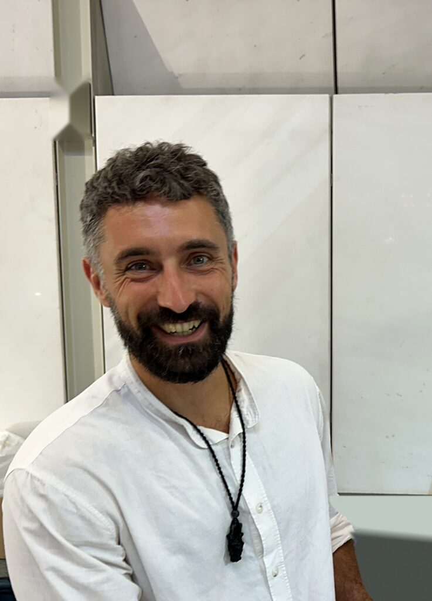
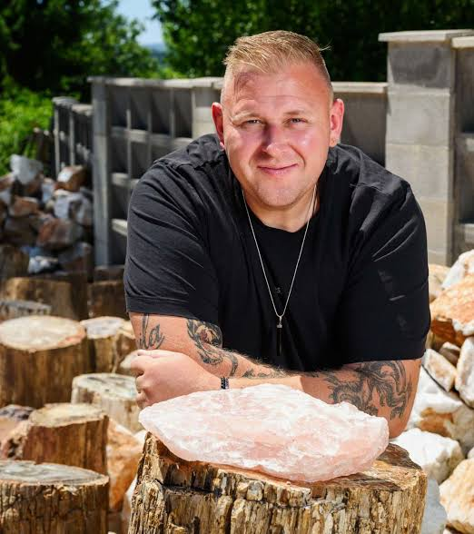

A cut gemstone is one possible result of working a rough stone. A museum-grade mineral specimen preserves the original formation itself. The finest pieces remain uncut—collected for the complete object, exactly as it developed.
Rarity, documented provenance and physical presence bring these specimens into the world of serious collecting. Each piece is unique; once it enters a collection, an identical replacement cannot be found.
Rubies, sapphires, tektites and rare multi-mineral conglomerate formations. Each selection begins with sourcing, verification and documented provenance; certification is handled specimen by specimen.
A single, uncut 30 g specimen from the Czech Republic. This natural glass formed in a meteorite impact approximately 15 million years ago.
Origin
Czech Republic
Current location
Slovenia
Weight
30 g
Rarity / quality
Dealer-market 3xA (AAA)
Price
On application
AAA is the highest tier in the dealer-market grading described by ZOEL. It is a trade description, rather than an independent laboratory certification.
There is no central exchange for rough mineral specimens, no daily price and no benchmark index. Valuation is closer to fine art: specific to the object and informed by specialist knowledge.
ZOEL sees this non-standardised market as an opportunity for early participants, before wider institutional involvement. ZOEL reports that record-quality pieces often outperform pre-sale estimates.
Its published market perspective describes dealer-reported appreciation in the high single digits. These are estimates and individual sale examples, not an official index or a forecast.
Dealer-estimated annual baseline appreciation across the broad market.
$1.25M+
Reported total for a Sotheby’s Natural History sale of 30 specimens.
$662,500
ZOEL-reported Heritage Auctions record for a single rose quartz specimen.
Figures reflect ZOEL’s published market commentary. Dealer estimates and individual auction results are not a benchmark or a forecast. No official rough-mineral index exists, and ZOEL does not publish a forecast.
Colour, texture and the natural world.A closer connection. A sense of scale.
Deep time. Lasting presence.
Formed millions of years before the rooms they now inhabit, these mineral specimens preserve a physical fragment of the earth’s history. Their rarity, provenance and visual presence place them alongside fine art in private collections.
Crystal Sanctuary Golf
This same idea informs ZOEL’s curated crystal-experience concept, currently in development for premium hospitality and private residences.
Independent verification, personal guidance and a clear plan for what happens after acquisition.
Certified individually.
Certification is arranged at confirmed interest, rather than applied in advance to the entire inventory. Each specimen is assessed independently, with documentation specific to the object.
Gübelin Gem Lab
Gemological analysis
Natural History Museum of Slovenia
Geological provenance
The institution and scope of verification are discussed for the individual piece. The featured sapphire’s existing certification is listed above.
Delivered with care.
Take possession of your specimen at home, with fully insured delivery and documentation from door to door. Its destination is your choice.
For collectors who prefer professional custody, or are building towards a private gallery, secure storage is available through a specialist precious-goods logistics provider in Central Europe.
For museum-grade specimens beyond a single buyer’s reach, co-ownership provides another route. A small circle of partners can participate through a documented shared holding.
ZOEL describes its prior ruby and sapphire transactions as fully documented and compliant. Co-ownership uses a legally governed shared holding; the specific arrangements are discussed privately.
Participate without carrying the entire acquisition cost alone.
Professional management
Storage, insurance and the eventual sale are handled within the agreed arrangement.
Documented governance
Each participant’s rights and obligations are set out in writing from the outset.
A natural, certified specimen. A small circle of partners you choose.
The people you’ll speak with.
Every acquisition starts with a direct conversation. Meet the people responsible for ZOEL’s structure, sourcing and custody.

Nejc Boljka
Founder & co-manager
Nejc brings twenty years of building and scaling businesses across industries, with a particular focus on designing ecosystems. That experience informs ZOEL’s structure.
He discovered the world of crystals through Grega, following several ventures they built together.

Grega Kraljevski
Co-manager & custodian
With roughly 35 years in the crystal and mineral trade, Grega oversees sourcing, verification and custody on each transaction.
He operates through ARMOUR STORITVE d.o.o.
It begins with a conversation.
ZOEL is a private acquisition service. There is no open marketplace or online checkout. Each piece and each collector’s intentions deserve an individual conversation.
Payment is accepted by bank transfer or major cryptocurrencies, subject to standard source-of-funds verification. Specimen sales are subject to certification and normal verification procedures.
A considered acquisition
ZOEL specialises in sourcing, certifying and placing rough mineral specimens. It does not provide financial, tax or legal advice. Its current site describes its facts and figures as drawn from public, verifiable sources; individual claims should be checked against their underlying records.
Before proceeding, discuss tax treatment, legal structures and investment suitability with your own lawyer, tax adviser and financial adviser. Nothing on this page is financial, tax or legal advice.